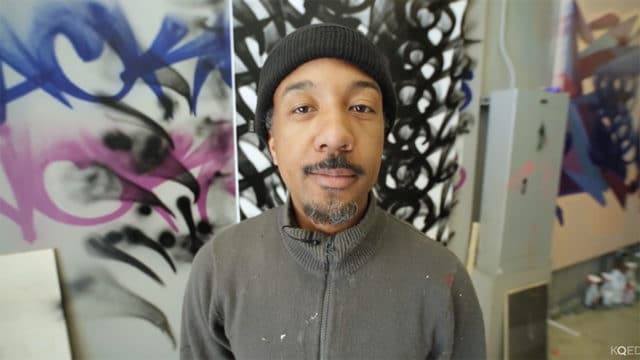
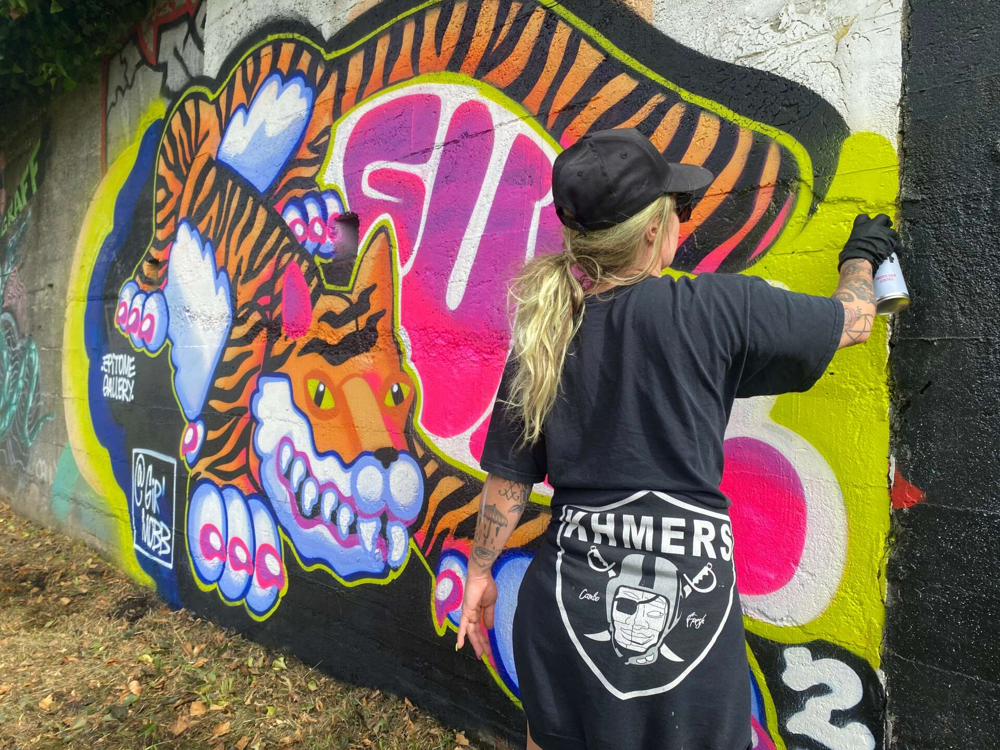

GATS is an anonymous street artist based in Oakland, known for the distinctive mask he wears while working.
GATS is an anonymous street artist based in Oakland, known for the distinctive mask he wears while working.

APEXER (b. 1978, San Francisco, CA), also known as Ricardo Richey, is a street artist who creates colorful abstract patterns through the use of spray paint. Sam Flores is an American visual artist, illustrator, and muralist, primarily creating urban- and graffiti-inspired modern art. Sam Flores was born in the state of New Mexico in the United States. As a teen, he moved to San Francisco, California.
Sam Flores is an American visual artist, illustrator, and muralist, primarily creating urban- and graffiti-inspired modern art. Sam Flores was born in the state of New Mexico in the United States. As a teen, he moved to San Francisco, California.

NINA WRIGHT, founder and director of Graffiti Camp for Girls, aka GIRL MOBB, is an artist, muralist, printmaker, and teacher with a BFA from the Academy of Art University in San Francisco.{kind=link}